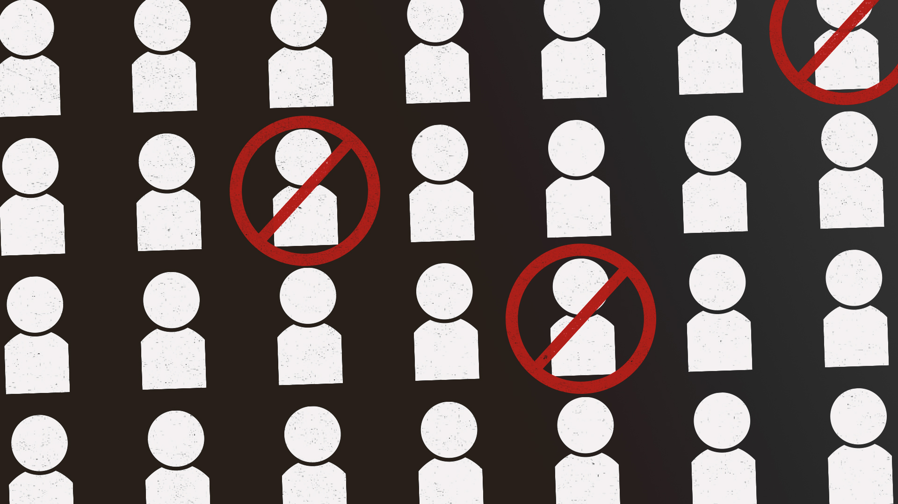

<!DOCTYPE html>
<html lang="en"></html>
<head>
    <meta charset="utf-8">
    <meta name="viewport" content="width=device-width, initial-scale=1.0">
    <title>Quinn Kowitt</title>
<!--  --> 
  <link href="https://cdn.jsdelivr.net/npm/bootstrap@5.2.0-beta1/dist/css/bootstrap.min.css" rel="stylesheet" integrity="sha384-0evHe/X+R7YkIZDRvuzKMRqM+OrBnVFBL6DOitfPri4tjfHxaWutUpFmBp4vmVor" crossorigin="anonymous">
  <link href="css/article.css" rel="stylesheet">

  <link rel="preconnect" href="https://fonts.googleapis.com">
<link rel="preconnect" href="https://fonts.gstatic.com" crossorigin>
<link href="https://fonts.googleapis.com/css2?family=PT+Serif:ital,wght@0,400;0,700;1,400&family=Raleway:wght@400;700&display=swap" rel="stylesheet">

</head>
<body>

    <div class="container-fluid">
        
        <div class="row my-header sticky-top">
            <div class="col">
                <div class="container">
                    <div class="row" id="header">
                        <div class="col">
                            <h3><a href="index.html">Quinn Kowitt</a></h3>
                        </div>
                        <div class="col" style="text-align: right;">
                            <h3><A href="writing.html">Writing</A></h3> 
                        </div>
                    </div>
                </div>
            </div>
        </div>

        <div class="row mybodyrow">
            <div class="col">
                <div class="container" >
                    <br>
                    <div class="row">
                        <div class="container">
                                
                
                            <h3 style="margin-top: 10px;margin-bottom: 15px;">On Deplatforming </h3>
                            <p>By Quinn Kowitt — February 28, 2020</p>
                        </div>
                    <div class="container" style="margin-bottom: 75px">
                
                        <p>Katie Hopkins, for the blessedly-out-of-the-loop, is a British media figure. It’s hard to know if in her heart of hearts Hopkins is really a racist, a transphobe, and an Islamophobe, but racism, transphobia, and Islamophobia are certainly evident in most of her writing, speaking, and actions. In late January 2020, Hopkins probably opened her phone to the alarming news she had been suspended from Twitter. She was, at least until regaining access to the account, unable to spread her vitriolic discourse to her one million followers. This is deplatforming, and in case you haven't already guessed, it's a bit controversial.</p>
                
                        <p>Lots of digital ink has been spilled, and continues to be spilled, on the phenomenon of deplatforming, especially on twitter. Mainstream op-ed pages, groyper riddled twitter threads, and 4chan boards alike swell with the incessant discourse. The field is certainly not lacking in hot takes, from <a href="https://www.vice.com/en_us/article/bjbp9d/do-social-media-bans-work">Vice articles</a> to right-wing DC-based think tanks. Most of this discourse, almost all in fact, falls within a rigid binary, a dichotomy where deplatforming either “works” or does not. There is no in-between, and very little nuance: just these two mutually exclusive poles. Lacking from the conversation is an examination of what “working” means, and any significant grappling with the moral and efficacious gray area of using deplatforming. By asking what deplatforming works for, and highlighting informed voices in the discussion, we can hope to add some clarity to the often-muddled discussion. </p>
                
                        <p>A rigorous examination of the taxonomy we want to use is in order. Terms like no-platforming and deplatforming are thrown in with discussions of protests of campus speakers, Twitter account bans, Facebook group quarantining, and questions of who gets to write op-eds. This chaotic zeitgeist makes a mess of related but distinct phenomena.</p>
                
                        <p>No-platforming refers to the movement to deny speakers access to a larger platform, i.e. speaking on a campus, or getting a slot on an op-ed page. Examples include the protests of Milo Yiannopoulos in Berkeley and Charles Murray at the University of Michigan. Each example has its specifics, of course. Yiannopoulos was not only a well-known far right troll with ties to neo-Nazis, but was threatening to doxx trans students, directly putting them in danger. Murray, author of the scientifically invalid and discredited book The Bell Curve, was just trying to rebuild his career of pseudoscientific racism for the 21st century. The important mechanism is that these are exclusive environments, not platforms that act as a sort of public commons (as social media seem to), so this movement is a related but separate topic. Who gets to speak on a stage, or an op-ed page, or TV, is inherently exclusionary: only a small number of people can have access to the platform. Therefore, questions of who gets to speak on those platforms become altogether different than the related mechanism of deplatforming.</p>
                
                        <p>Deplatforming, as used here, is the disabling or removing of individual accounts on social media, including Twitter, Facebook, and YouTube. The focus of this article is on these ‘Industrial’ social media networks, and there may be some variance for artisanal or community-reliant networks. These are forums that, although privately controlled, act as a de-facto public commons. Anyone and everyone who can access the internet, can and does use these platforms, and many are required for work. Globally this excludes many in the developing world and even some in the US who lack sufficient resources, but the structure of the internet is still fundamentally one of open access. This makes the question of deplatforming both a technically difficult one, but also, at least potentially, ethically fraught. A responsible discourse on deplatforming should not narrow its focus to just one aspect, but consider the ethical implications, the goals, and the effects we have evidence to support.</p>
                
                        <p>In discussions of deplatforming, there are a couple examples that are often cited. The first is that of Milo Yiannopoulos, the previously-mentioned far right troll who came to prominence on the wave of the targeted harassment campaign termed “gamergate.” Yiannopoulos was enjoying a wave of support from some unsavory corners of the internet, and continued to gain a spotlight with controversial speaking gigs on college campuses and mainstream TV shows. However, after being removed (deplatformed) from Twitter and later Facebook, much of his support waned, leaving him reportedly over $2 million in debt. For a more detailed analysis see Zack Beauchamp’s <a href="https://www.vox.com/policy-and-politics/2018/12/5/18125507/milo-yiannopoulos-debt-no-platform">article</a> in Vox. However, it is impossible to disaggregate the potential causal factors of deplatforming with the wide disavowal by the right after Yiannopoulos’ defense of pederasty and his personal falling out with many other figureheads of the ‘alt-right.’ Another example of this success, or at least successful marginalization, is Alex Jones’ Info Wars, the conspiracy theory laden romp through the twisted mind of Jones. The show still exists, on its own website, but the reach of the show is exponentially smaller than if it were still hosted on YouTube, Facebook, Twitter, etc. Another piece of evidence often brought into the conversation, although somewhat tangential, is the paper “<a href="http://comp.social.gatech.edu/papers/cscw18-chand-hate.pdf">You Can’t Stay Here: The Efficacy of Reddit’s 2015 Ban Examined Through Hate Speech</a>” published by researchers at the Georgia Institute of Technology. This study found an 80% decrease in hate speech by accounts that frequented the banned subreddits. This study, although interesting, does not actually fall under the umbrella of deplatforming, as the accounts were not banned, just the subreddit being closed. </p>
                
                        <p>To get a better sense of the social media systems deplatforming attempts to grapple with, I spoke with Parsons and Eugene Lang professor Irwin Chen, who teaches in both Design and Journalism. We met in a crowded Manhattan bakery on 16th Street. Smells of baked pastries mixed with those of freshly ground coffee, filling the cramped space. Traffic was vaguely audible from the street and a consistent ebb and flow of people brushed past. As I was getting my notebook out, a little girl walked into me, not looking where she was going, spilling a bit of my coffee, before a stressed-looking parent ran to retrieve her. The mild din of the bakery, the bits of calm and chaos swirling together made for a productive environment, and thankfully the noise did not interrupt our discussion. The professor sat across from me in a grey cardigan sipping his coffee as he explained how he saw the dynamic from a design perspective.</p>
                
                        <p>On the question of deplatforming’s effectiveness, Chen proposed a spectrum between speech moderation and financial moderation. On the speech side lies taking down accounts on Twitter, limiting someone's speech. The Katie Hopkins example falls here where her ability to speak on Twitter was temporarily limited (she has since been reinstated). On the other side is purely financial, like the <a href="https://www.buzzfeednews.com/article/blakemontgomery/the-alt-right-has-a-payment-processor-problem">PayPal bans</a> of far right figures. Somewhere in the middle of this spectrum are services like Cloudflare, who provide DDOS protection to websites. Chen pointed to both the service ban, like Cloudflare <a href=https://www.wired.com/story/free-speech-issue-cloudflare/">pulling protection</a> from the notoriously toxic 8chan and the neo-Nazi website Daily stormer, as well as financial punishment as far more effective than speech bans. “It should take pretty egregious action though” he said, calling the effects a “significant kneecapping.” </p>
                
                        <p>On deplatforming as a strategy, he added: “One way to look at this issue, or the way I look at it, is partially due to the rise of the Internet.” Chen described how norms, whether consciously or not, have moved into contention, enabled both by technology and the political climate. Irwin went on to explain how this contention of norms is not always a rightward swing. “We can see movements like Me Too as establishing new norms, which results in a type of deplatforming.”</p>
                
                        <p>“Extremism on platforms like Twitter is a challenge of established norms.” When describing the system, Chen presented a dichotomy between what he called ‘opt-in’ and ‘opt-out’ systems. The former put the onus on users to report deleterious or offensive content, while the latter is a system more in the background, where users don't see it as much and the platform handles most moderation unprompted. The ‘opt-in’ system “makes sense when you’re small, and [the ‘opt-out’ system] is only really feasible when you’re a larger company.” According to Chen, the larger ‘industrial’ companies have a threefold motivation for keeping the system where users are more in the driver seat. This reasoning is first that companies are “lazy,” second that they are frugal, and third that they are “apprehensive.” “They don't want to risk losing a big chunk of their user base.”</p>
                
                        <p>The way companies codify these norms into something more enforceable is with their terms of conduct. Social network platforms use these to justify actions including account removal. On Twitter specifically, the company focuses on <a href="https://help.twitter.com/en/rules-and-policies/hateful-conduct-policy">hateful conduct</a>, <a href="https://help.twitter.com/en/rules-and-policies/violent-groups">violent extremist groups</a>, and <a href="https://help.twitter.com/en/rules-and-policies/violent-threats-glorification">violent threats</a>. The platform seems to be focusing on algorithmic solutions, as Chen suggested, to finding tweets and accounts they find violate their rules on the above three. According to a Twitter spokesperson over email, “40% of Tweets actioned for abuse flagged to our team without people on Twitter having to file reports.” What their rules amount to is less a regime of deplatforming, than a rules-based moderation system. You can't make specific threats of violence, or promote violence against or attack people based on various protected class statues. They do not deplatform to try to disrupt networks or remove high profile figures; Neo-Nazis like Richard Spencer and Nicholas Fuentes are still allowed on the network and have somewhat large platforms. </p>
                
                        <p>These community guidelines are notoriously vague, with the justification for said lack of transparency being that specificity would lead to clever evasion.  One line of critique of these social media companies is to call for reform and specificity in these terms. One of the groups working within this lane is the Change the Terms coalition, bringing together groups like the Center for American Progress, Free Press, Southern Poverty Law Center and more. I spoke with Change the Terms co-founder Jessica J. González about the goals of the group and the ethos surrounding them. According to Gonzáles, there are two goals for the group: to make these platforms safer for marginalized people, and to disrupt organizing for hate groups. “People from historically oppressed groups are targeted online” Gonzáles said, describing the coalition’s mission as “fighting for their ability to speak.” </p>
                
                        <p>In this task Gonzáles and the coalition she co-founded are approaching an important issue with free speech, in that it cannot be truly absolute. It’s a paradox, because some speech acts do not allow for other speech acts. Not necessarily speech per se though, but the act of certain speech, and what that act is doing. </p>
                
                        <p>In philosophy this is called the content/act distinction. A good example is the sentence “I love you.” When said by a spouse, the act of saying “I love you” is very different from a stalker saying “I love you” to their victim every day for months.  To defend the content of the stalkers declaration of love would be missing the point, it doesn't matter if it’s true because the act of saying it is the problematic part. It is a useful concept for approaching many types of speech, especially dog whistling, but here it applies to hate speech. The act of saying hate speech in an environment marginalizes and suppresses the speech of the targets of the hate speech, and this is amplified as hateful rhetoric proliferates. In Gonzales’ words “some people’s free speech makes others speech inaccessible.” </p>
                
                        <p>Change the Terms proposes a <a href="https://assets.website-files.com/5bba6f4828dfc3686095bf6b/5bd0e36186e28d35874f0909_Recommended Internet Company Corporate Policies  Terms of Service_final-10-24.pdf">detailed set</a> of corporate policies, with an enforcement strategy that includes deplatforming. “Free speech is never absolute” Gonzales said, citing examples of defamation, shouting fire, and revealing troop movements in times of war. She went on to cite a study showing a decrease in hate speech across reddit after bans of prominent racist and toxic communities. For examples of companies that are trying to do more she referenced Cloudflare <a href="https://www.wired.com/story/free-speech-issue-cloudflare/">refusing service</a> to alt-right websites. Deplatforming is, in Gonzales’ view “not a silver bullet” but it can be effective at both disrupting extremist organizing and making platforms safer for marginalized voices. </p>
                
                        <p>There are advocacy groups that do not share this view of deplatforming. I spoke to an EFF representative over email, Karen Gullo, who hit on the group’s skepticism of using censorship even when the goals are admirable. To quote EFF Executive Director in an op-ed published in Wired magazine, “the power to silence doesn't just go in one direction.” The group also co-authored a paper titled “<a href="https://www.eff.org/wp/caught-net-impact-extremist-speech-regulations-human-rights-content">Caught in the Net: The Impact of ‘Extremist’ Speech Regulations on Human Rights Content</a>”, in which examples like Chechnian independence, Kurdish activism, and satirical commentary were explored as unfair and potentially harmful moderation false-positives. This is a problem even with human moderation, as detailed in a <a href="https://www.propublica.org/article/facebook-enforcement-hate-speech-rules-mistakes">ProPublica investigation</a> that found failures in the handling of 22 of 49 potentially problematic posts. Given this ambiguity I found it illustrative to talk to some researchers and academics about the phenomenon. </p>
                
                        <p>One researcher I talked with was CV Vitolo-Haddad, who studies the rhetoric of the far right. They research the Proud Boys and other white nationalist groups, collecting lots of their data online via social media. Vitolo-Haddad described taking a more critical look at deplatforming as “self interested frustration.” Their research was being disrupted by bans on the far-right accounts from which they were trying to collect data. They approached originally from a pro-deplatforming angle, looking for evidence it was a success, and largely finding evidence to the contrary. What Vitolo-Haddad was finding was that at least online, deplatforming was only making hate groups more resilient. They saw the celebration around Jones and Yiannopoulos as a bit too celebratory. “I’m not seeing a decrease in white supremacy” they said, the propaganda posters and real-life violence hasn't slowed. They related the deplatforming of far-right US-based groups to the far right Wahhabi group ISIS (sometimes called Daesh). After being banned on Twitter ISIS ran to encrypted services like Telegram, “getting rid of the accounts just made them sneakier” they said. </p>
                
                        <p>This analysis of ISIS and its conclusions are not universal however. Amarnath Amarasingam, Assistant Professor at Queen’s University in Ontario, studies ISIS and other extremist groups in the Middle East and Sri Lanka. He describes how platforms like Twitter and Facebook, and eventually Telegram were slow to react to ISIS presence. According to Amarasingam, pre-2015 ISIS accounts and propaganda were everywhere on the site. The companies running the platforms took years to crack down on ISIS content, and at first only on English-language channels. More <a href=https://www.reuters.com/investigates/special-report/myanmar-facebook-hate/">recently</a> Facebook encountered a similar issue with anti-Rohingya and Islamophobic content in Myanmar, seemingly unable to regulate the Burmese-language content. Other platforms like Telegram and Twitter also eventually caught up with more enforcement. </p>
                
                        <p>Amarasingam reflected on the effectiveness saying, “after 2016 I didn't talk to any ISIS supporters online.” He went on to explain how this is probably a result of both decreased Daesh strength and the retreat to private networks. He explained how terrorist groups jump from platform to platform, like from Facebook to Twitter to Telegram to TamTam. “Every platform is slow to catch on” he said, and terror groups are “spending more time rebuilding than recruiting.” However, just because deplatforming slows them down, doesn't mean they’re going away. There are still hundreds of Telegram groups and other private networks. One of the biggest successes and the main reason you don't see ISIS content pop up online much anymore, Amarasingam said, is projects like the Global Internet Forum to Counter Terrorism. The GIFCT has a massive library of extremist propaganda videos that can be used as a filter to prevent the videos being reuploaded elsewhere. This kind of counter-programming falls under the umbrella of content moderation, rather than actor deplatforming. </p>
                
                        <p>On the comparisons between ISIS and the ‘alt-right’ Amarasingam saw some connection. “The large activist community, who spend a lot of their day reporting accounts, honed their skills on ISIS for several years” he said, adding “the far-right didn't stand a chance.” However, on encrypted services like Telegram, they are “remarkably vibrant.” “I’m probably in several hundred groups right now,” Amarasingam said, “and there's no sign that any of them are getting suspended.” This game of extremist whack-a-mole was also mentioned by Vitolo-Haddad, who brought up a paper published in Nature entitled “Hidden resilience and adaptive dynamics of the global online hate ecology.” The paper detailed how networks of individuals in hate groups like the KKK resurrected after bans, often with more clever moderation evasion strategies. For instance the KKK was kicked off of Facebook, and because many members were connected to each other through other networks, recreated the same group on VK, a Russian social network, and then used the Cyrillic characters to go back to Facebook and avoid the algorithms.</p>
                
                        <p>The whack-a-mole, for Vitolo-Haddad, is not just ineffective but misses the point. “The metaphor I like to use is a pot of boiling water, the molecules start to move and they start to hit each other and speed up until the water is boiling.” In this metaphor the water is the ideology and the molecules are individual people, to blame the first molecule or even a group of them would be missing the forest for the trees. The problem is, in Vitolo-Haddad’s words, “there’s a fucking fire.” The fire that’s boiling the water here are the actual material causes of reactionary extremism. Short of actually solving these conditions, Vitolo-Haddad draws on the conclusions of the study to propose moderation backed by evidence. “You can randomly ban 10% of a group, which works pretty well but is not ethical, or you can use algorithms to force hate groups and anti-hate activists into interacting with each other.” This later strategy was proved effective by the Nature article, and creates fewer ethical issues.   </p>
                
                         <p>This may be the only way to disrupt these networks, as the multi-connected nature of groups on the internet would require multiple companies, including Telegram and Facebook and Twitter, to work in coordination. In a market setting where these giant tech companies are ostensibly in competition with each other, the required cooperation is impossible. Many proponents of deplatforming put it forward as a strategy to fight hate online, but given these findings, this may not have that effect. It may be effective for sectioning off and isolating hateful content, in order to make these platforms safer for the targets of hateful rhetoric. But even the effectiveness of this is questionable. This is not to say nothing should be done however, just that deplatforming may not be the right way to address these issues. Large companies are pursuing other avenues, like Alphabet’s Jigsaw project. I talked to Amelise Lane of Jigsaw over email, who explained how the company created and uses an open source methodology called the <a href="https://redirectmethod.org/">Redirect Method</a> to redirect people viewing extremist content to deradicalization programs and content. “Extremist groups like ISIS are increasingly turning to the internet to spread their messages and recruit new members.” Lane told me, “The Redirect Method reaches vulnerable audiences through targeted advertising, and redirects them to online videos that refute ISIS's recruitment messaging. The pilot experiment reached more than 300,000 people and drove more than half a million minutes of video viewing time.”</p>
                
                         <p>Outside of this highly specialized lane, if we are to take a democratic ethos to this problem, it is illustrative to examine the viewpoint of other social media users. These are people who are active on social media and have some understanding of the space, but are less engaged with deplatforming discourse in particular. </p>
                        
                        <p>In this vein I talked to Syyah Brown, a Journalism student and active Twitter user. We sat down in her small East Village room to discuss deplatforming. The room was illuminated by neon violet LED strips that bathed everything in an amethyst haze. A punk poster from the 80s hung above the bed that took up most of the room, barely leaving me space to sit down in a chair. Bright posters glowed on the walls, seeming almost to emit their own light. </p>
                
                        <p>After sitting down in the surealy bright purple room, we began to discuss deplatforming. She was apprehensive about the whole process, and extremely skeptical of where the pushes were coming from. “It depends who’s writing the rules, and who’s in charge, but mostly I don’t think it’s necessary.” “If someone is harassing you,” Brown said, “it’s not hard to mute or block them.” She also worried about the implications of setting hard rules about language use, “meanings can vary,” and top down systems can punish people more than is appropriate. “It’s like Cancel Culture” she said, adding “it’s unproductive.” “Even like Katie Hopkins, like sure she’s awful, but if you cut people out, they can’t learn.”</p>
                
                        <p>Deplatforming may have some role in addressing hateful and extremist groups in social media. But as a mechanism it is both fraught with unintended consequences as well as of limited usefulness. Blindly sloganeering with ‘deplatforming works’ twitter posts is unhelpful and potentially problematic. This is not an issue with easy answers or solutions, and pretending we have enough information to reach a consensus is reductive to the point of absurdity. Deplatforming is definitely not a settled issue, but informed and data-driven conversations are the best way to approach thorny issues like on-line hate speech and extremism.</p>
                
                
                </div>
                </div> 


                 </div>
            </div>
         </div>
         </div>
         <script src="https://cdn.jsdelivr.net/npm/bootstrap@5.2.0-beta1/dist/js/bootstrap.bundle.min.js" integrity="sha384-pprn3073KE6tl6bjs2QrFaJGz5/SUsLqktiwsUTF55Jfv3qYSDhgCecCxMW52nD2" crossorigin="anonymous"></script>
</body>